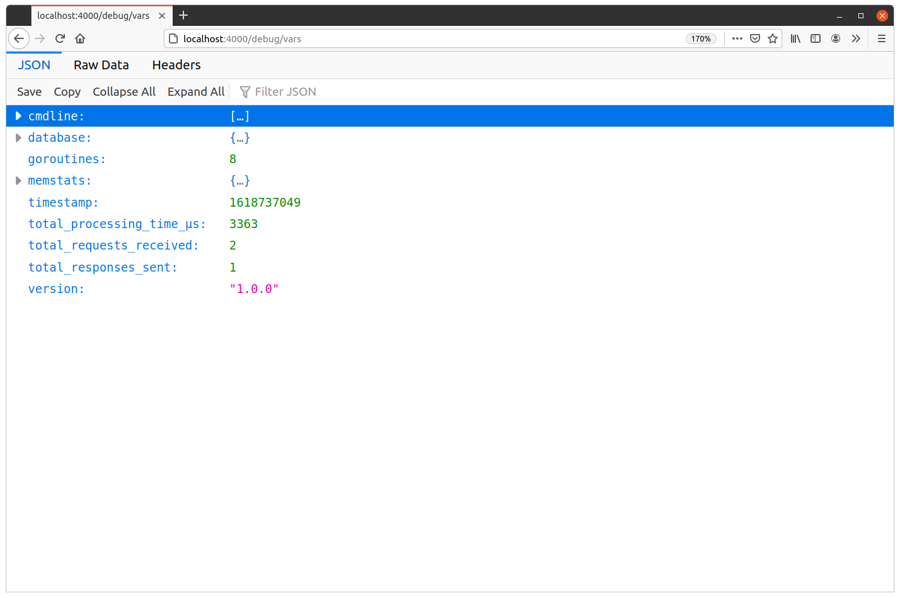

معیارهای سطح درخواست
در این فصل قصد داریم middleware جدیدی ایجاد کنیم تا request-level سفارشی برای برنامه خود ثبت کنیم. ابتدا سه مورد زیر را ثبت خواهیم کرد:
- تعداد کل درخواستهای دریافت شده.
- تعداد کل پاسخهای ارسال شده.
- زمان کل (تجمعی) صرف شده برای پردازش تمام درخواستها به میکروثانیه.
تمام این مقادیر عدد صحیح (integer) خواهند بود، بنابراین میتوانیم این معیارها را با استفاده از تابع expvar.NewInt() در پکیج expvar ثبت کنیم.
بیایید مستقیماً وارد کد شویم و یک متد middleware جدید metrics() ایجاد کنیم که متغیرهای expvar لازم را مقداردهی اولیه کند و سپس هر بار که درخواستی را پردازش میکنیم آنها را بهروز کند. به این صورت:
package main import ( "errors" "expvar" // New import "fmt" "net" "net/http" "strings" "sync" "time" "greenlight.alexedwards.net/internal/data" "greenlight.alexedwards.net/internal/validator" "golang.org/x/time/rate" ) ... func (app *application) metrics(next http.Handler) http.Handler { // Initialize the new expvar variables when the middleware chain is first built. var ( totalRequestsReceived = expvar.NewInt("total_requests_received") totalResponsesSent = expvar.NewInt("total_responses_sent") totalProcessingTimeMicroseconds = expvar.NewInt("total_processing_time_μs") ) // The following code will be run for every request... return http.HandlerFunc(func(w http.ResponseWriter, r *http.Request) { // Record the time that we started to process the request. start := time.Now() // Use the Add() method to increment the number of requests received by 1. totalRequestsReceived.Add(1) // Call the next handler in the chain. next.ServeHTTP(w, r) // On the way back up the middleware chain, increment the number of responses // sent by 1. totalResponsesSent.Add(1) // Calculate the number of microseconds since we began to process the request, // then increment the total processing time by this amount. duration := time.Since(start).Microseconds() totalProcessingTimeMicroseconds.Add(duration) }) }
پس از اتمام این کار، باید فایل cmd/api/routes.go را بهروز کنیم تا middleware جدید metrics() را در ابتدای زنجیره قرار دهیم. به این صورت:
package main ... func (app *application) routes() http.Handler { router := httprouter.New() router.NotFound = http.HandlerFunc(app.notFoundResponse) router.MethodNotAllowed = http.HandlerFunc(app.methodNotAllowedResponse) router.HandlerFunc(http.MethodGet, "/v1/healthcheck", app.healthcheckHandler) router.HandlerFunc(http.MethodGet, "/v1/movies", app.requirePermission("movies:read", app.listMoviesHandler)) router.HandlerFunc(http.MethodPost, "/v1/movies", app.requirePermission("movies:write", app.createMovieHandler)) router.HandlerFunc(http.MethodGet, "/v1/movies/:id", app.requirePermission("movies:read", app.showMovieHandler)) router.HandlerFunc(http.MethodPatch, "/v1/movies/:id", app.requirePermission("movies:write", app.updateMovieHandler)) router.HandlerFunc(http.MethodDelete, "/v1/movies/:id", app.requirePermission("movies:write", app.deleteMovieHandler)) router.HandlerFunc(http.MethodPost, "/v1/users", app.registerUserHandler) router.HandlerFunc(http.MethodPut, "/v1/users/activated", app.activateUserHandler) router.HandlerFunc(http.MethodPost, "/v1/tokens/authentication", app.createAuthenticationTokenHandler) router.Handler(http.MethodGet, "/debug/vars", expvar.Handler()) // Use the new metrics() middleware at the start of the chain. return app.metrics(app.recoverPanic(app.enableCORS(app.rateLimit(app.authenticate(router))))) }
خوب، بیایید آن را امتحان کنیم. API را با غیرفعال کردن rate limiting اجرا کنید:
$ go run ./cmd/api -limiter-enabled=false time=2023-09-10T10:59:13.722+02:00 level=INFO msg="database connection pool established" time=2023-09-10T10:59:13.722+02:00 level=INFO msg="starting server" addr=:4000 env=development
و وقتی در مرورگر خود به localhost:4000/debug/vars مراجعه میکنید، باید ببینید که پاسخ JSON شامل موارد total_requests_received، total_responses_sent و total_processing_time_μs است. به این صورت:
در این نقطه، میتوانیم ببینیم که API ما یک درخواست دریافت کرده و صفر پاسخ ارسال کرده است. اگر فکر کنید، این منطقی است — در لحظهای که این پاسخ JSON تولید شد، هنوز واقعاً ارسال نشده بود.
اگر صفحه را رفرش کنید، باید ببینید که این اعداد افزایش مییابند — از جمله افزایش مقدار total_processing_time_μs:

بیایید آن را تحت بار آزمایش کنیم و دوباره از hey برای ارسال درخواستها به endpoint POST /v1/tokens/authentication استفاده کنیم.
ابتدا API را مجدداً راهاندازی کنید:
$ go run ./cmd/api -limiter-enabled=false time=2023-09-10T10:59:13.722+02:00 level=INFO msg="database connection pool established" time=2023-09-10T10:59:13.722+02:00 level=INFO msg="starting server" addr=:4000 env=development
و سپس با hey بار را به این صورت تولید کنید:
$ BODY='{"email": "alice@example.com", "password": "pa55word"}'
$ hey -d "$BODY" -m "POST" http://localhost:4000/v1/tokens/authentication
Summary:
Total: 9.9141 secs
Slowest: 3.0333 secs
Fastest: 1.6788 secs
Average: 2.4302 secs
Requests/sec: 20.1732
Total data: 24987 bytes
Size/request: 124 bytes
Response time histogram:
1.679 [1] |■
1.814 [1] |■
1.950 [3] |■■■
2.085 [8] |■■■■■■■
2.221 [28] |■■■■■■■■■■■■■■■■■■■■■■■■
2.356 [39] |■■■■■■■■■■■■■■■■■■■■■■■■■■■■■■■■■■
2.491 [46] |■■■■■■■■■■■■■■■■■■■■■■■■■■■■■■■■■■■■■■■■
2.627 [34] |■■■■■■■■■■■■■■■■■■■■■■■■■■■■■■
2.762 [20] |■■■■■■■■■■■■■■■■■
2.898 [9] |■■■■■■■■
3.033 [11] |■■■■■■■■■■
Latency distribution:
10% in 2.1386 secs
25% in 2.2678 secs
50% in 2.4197 secs
75% in 2.5769 secs
90% in 2.7718 secs
95% in 2.9125 secs
99% in 3.0220 secs
Details (average, fastest, slowest):
DNS+dialup: 0.0007 secs, 1.6788 secs, 3.0333 secs
DNS-lookup: 0.0005 secs, 0.0000 secs, 0.0047 secs
req write: 0.0001 secs, 0.0000 secs, 0.0012 secs
resp wait: 2.4293 secs, 1.6787 secs, 3.0293 secs
resp read: 0.0000 secs, 0.0000 secs, 0.0001 secs
Status code distribution:
[201] 200 responses
پس از اتمام کار، اگر localhost:4000/debug/vars را در مرورگر خود رفرش کنید، معیارهای شما باید چیزی شبیه به این باشند:
بر اساس مقادیر total_processing_time_μs و total_responses_sent، میتوانیم محاسبه کنیم که زمان پردازش متوسط به ازای هر درخواست تقریباً ۲.۴ ثانیه بوده است (به یاد داشته باشید که این endpoint عمداً کند و پرهزینه از نظر محاسباتی است زیرا باید رمز عبور کاربر bcrypted را تأیید کنیم).
481455830 μs / 201 reqs = 2395303 μs/req = 2.4 s/req
این با دادههایی که در خلاصه نتایج hey میبینیم همخوانی دارد که زمان پاسخ متوسط را ۲.۴۳۰۲ ثانیه نشان میدهد. مقدار hey زمان کل round-trip است، بنابراین همیشه کمی بالاتر خواهد بود زیرا شامل network latency و زمان صرف شده برای مدیریت درخواست توسط http.Server میشود.
اطلاعات تکمیلی
محاسبه معیارهای اضافی
بر اساس اطلاعات موجود در پاسخ GET /debug/vars، میتوانید برخی معیارهای اضافی جالب نیز استخراج کنید. مانند…
تعداد درخواستهای ‘فعال’ در حال انجام:
total_requests_received - total_responses_sent
تعداد متوسط درخواستهای دریافت شده در ثانیه (بین فراخوانیهای A و B به endpoint
GET /debug/vars):(total_requests_received_B - total_requests_received_A) / (timestamp_B - timestamp_A)
زمان پردازش متوسط به ازای هر درخواست (بین فراخوانیهای A و B به endpoint
GET /debug/vars):(total_processing_time_μs_B - total_processing_time_μs_A) / (total_requests_received_B - total_requests_received_A)